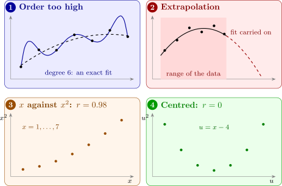
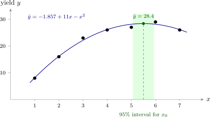

10.1 Polynomial models in one variable
The polynomial model of order \(k\) in one variable is \[ y = \beta _0 + \beta _1x + \beta _2x^2 + \dots + \beta _kx^k + \varepsilon , \] and the commonest cases are the quadratic (\(k = 2\)) and the cubic (\(k = 3\)). In the quadratic, \(\beta _1\) is no longer “the slope”: the slope of the mean, \(\beta _1 + 2\beta _2x\), changes with \(x\). The parameter \(\beta _2\) measures the curvature. The mean function is concave when \(\beta _2 < 0\) and convex when \(\beta _2 > 0\), and it turns at \(x = -\beta _1/(2\beta _2)\).
Considerations in fitting a polynomial
- (1)
- Keep the order low. A polynomial of high enough order fits any data, as the next result shows, and a perfect fit describes the noise as well as the trend. Transformations (Section 6) may straighten the relationship with fewer parameters; orders above \(3\) are seldom justified.
- (2)
- Build the model systematically. Either raise the order one term at a time until the highest term is not significant (forward), or start from a deliberately high order and remove the highest term while it is not significant (backward). The two need not stop at the same order.
- (3)
- Do not extrapolate. Beyond the range of the data, a polynomial can turn in directions the process never takes: a fitted quadratic yield curve, carried far enough, predicts negative yields.
- (4)
- Expect ill-conditioning. The powers \(x, x^2, x^3, \dots \) are highly correlated when the range of \(x\) is narrow relative to its distance from zero, and the problem worsens with each power. Centring \(x\) removes much of it (Theorem 10.1.3).
- (5)
- Keep the hierarchy. A model containing \(x^k\) should contain all the lower powers. A model such as \(y = \beta _0 + \beta _2x^2 + \varepsilon \) changes its meaning when the origin of \(x\) is moved (Theorem 10.1.2).
Figure 19 illustrates the first, third and fourth points.

Proposition 10.1.1. If the \(n\) observations have distinct values \(x_1, \dots , x_n\), the polynomial of order \(n - 1\) fits them exactly: every residual is zero.
Proof. The model matrix is the \(n \times n\) Vandermonde matrix with rows \((1, x_i, x_i^2, \dots , x_i^{n-1})\). If \(\mathbf {Xc} = \mathbf {0}\), the polynomial \(c_0 + c_1x + \dots + c_{n-1}x^{n-1}\), of degree at most \(n - 1\), has the \(n\) distinct roots \(x_1, \dots , x_n\), so it is the zero polynomial and \(\mathbf {c} = \mathbf {0}\). So \(\mathbf {X}\) is non-singular, the equations \(\mathbf {X}\boldsymbol \beta = \mathbf {y}\) have a solution, and least squares finds it, with \(\mathbf {e} = \mathbf {0}\). □
So \(R^2 = 1\) is always within reach, and it means nothing: the fit has no degrees of freedom left with which to estimate \(\sigma ^2\), and the curve between the data points (panel 1 of Figure 19) is not believable.
Centring and the hierarchy principle
The next result says that moving the origin of \(x\) or changing its units leaves a full polynomial fit unchanged.
Theorem 10.1.2. Let \(z = (x - c)/d\) with \(d \ne 0\). The polynomial models of order \(k\) in \(x\) and in \(z\), \[ y = \sum _{j=0}^k \beta _jx^j + \varepsilon \quad \text {and}\quad y = \sum _{j=0}^k \gamma _jz^j + \varepsilon , \] have the same fitted values, residuals and sums of squares, and the highest coefficients are related by \(\gamma _k = d^k\beta _k\). A model that leaves out some lower power does not have this property in general.
Proof. By the binomial theorem, \[ z^j = d^{-j}(x - c)^j = d^{-j}\sum _{i=0}^j \binom {j}{i}(-c)^{j-i}x^i , \] so each column \(z^j\) is a combination of \(1, x, \dots , x^j\), and \(\mathbf {X}_z = \mathbf {X}_x\mathbf {T}\) with \(\mathbf {T}\) upper triangular. The diagonal entries of \(\mathbf {T}\) are \(d^{-j} \ne 0\), so \(\mathbf {T}\) is non-singular. Then the hat matrices agree: \begin {align*} \mathbf {H}_z &= \mathbf {X}_x\mathbf {T}(\mathbf {T}^\top \mathbf {X}_x^\top \mathbf {X}_x\mathbf {T})^{-1}\mathbf {T}^\top \mathbf {X}_x^\top \\ &= \mathbf {X}_x\mathbf {T}\mathbf {T}^{-1}(\mathbf {X}_x^\top \mathbf {X}_x)^{-1}(\mathbf {T}^\top )^{-1}\mathbf {T}^\top \mathbf {X}_x^\top = \mathbf {H}_x , \end {align*}
so \(\hat {\mathbf {y}} = \mathbf {Hy}\), \(\mathbf {e}\) and every sum of squares are the same for both. Matching the coefficients of \(x^k\) in \(\sum _j\gamma _jz^j = \sum _j\beta _jx^j\), only \(z^k\) contains \(x^k\), with coefficient \(d^{-k}\), so \(\gamma _kd^{-k} = \beta _k\).
For the last statement, take \(y = \beta _0 + \beta _2x^2 + \varepsilon \). In terms of \(x\), the variable \(z^2 = (x^2 - 2cx + c^2)/d^2\) contains \(x\) when \(c \ne 0\), so the column space of \((\mathbf {1}, \mathbf {z}^2)\) contains a vector with a non-zero \(x\)-component, which \((\mathbf {1}, \mathbf {x}^2)\) does not. The two models are different models. □
So for a full polynomial, the choice of origin and scale is free, and the test of the highest-order term is the same whatever the coding, since \(\gamma _k\) and \(\beta _k\) differ only by the known factor \(d^k\). The lower coefficients do change: in the quadratic, \(\beta _1\) is the slope at \(x = 0\) and \(\gamma _1\) the slope at \(x = c\) (times \(d\)). Testing \(\beta _1 = 0\) in a quadratic asks whether the slope is zero at the origin, which depends on where the origin is; that is why removing a lower-order term while keeping a higher one is rarely sensible. The freedom to move the origin is what makes centring possible.
Theorem 10.1.3. Suppose the values of \(x\) are symmetric about \(\bar x\), so that the deviations \(u_i = x_i - \bar x\) are the same set of numbers as \(-u_i\). Then \(\sum _i u_i^m = 0\) for every odd \(m\). In particular, in the quadratic in \(u\) the column \(\mathbf {u}\) is orthogonal to both \(\mathbf {1}\) and \(\mathbf {u}^2\), and \(\operatorname {corr}(\mathbf {u}, \mathbf {u}^2) = 0\).
Proof. Pairing each \(u_i\) with the observation whose deviation is \(-u_i\), the odd powers cancel in pairs, and a deviation equal to \(0\) contributes nothing. Then \(\mathbf {1}^\top \mathbf {u} = \sum u_i = 0\), and \(\mathbf {u}^\top \mathbf {u}^2 = \sum u_i^3 = 0\). The sample covariance of \(u\) and \(u^2\) is \(\frac {1}{n}\sum u_i u_i^2 - \bar u\,\overline {u^2} = 0 - 0\), so the correlation is zero. □
For \(x = 1, \dots , 7\), \(\operatorname {corr}(x, x^2) = 0.977\), so in the uncentred quadratic both regressors have \(\mathrm {VIF} = 1/(1 - 0.977^2) = 22.3\); after centring at \(\bar x = 4\), both VIFs are \(1\). When the design is not symmetric, centring does not make the correlation exactly zero, but it usually reduces it greatly (Problem 8.5.2).
Example 10.1.4. A farmer applied seven levels of irrigation to tomato plots and recorded the yields.
| Irrigation, \(x\) | 1 | 2 | 3 | 4 | 5 | 6 | 7 |
| Yield, \(y\) | 8 | 16 | 23 | 26 | 27 | 29 | 26 |
The units of \(x\) are 10 mm of water a week, and \(y\) is in kilograms per plot. Fit a quadratic, test the quadratic term, and find the fitted yield and its turning point.
Solution. Centre at \(\bar x = 4\), so \(u = x - 4\) takes the values \(-3, \dots , 3\). The needed sums are \begin {gather*} \textstyle \sum u = 0, \quad \sum u^2 = 28, \quad \sum u^3 = 0, \quad \sum u^4 = 196, \\ \textstyle \sum y = 155, \quad \sum uy = 84, \quad \sum u^2y = 536 . \end {gather*} The normal equations for \(y = \beta _0 + \beta _1u + \beta _2u^2 + \varepsilon \) are \[ \begin {pmatrix} 7 & 0 & 28 \\ 0 & 28 & 0 \\ 28 & 0 & 196 \end {pmatrix} \begin {pmatrix} \hat \beta _0 \\ \hat \beta _1 \\ \hat \beta _2 \end {pmatrix} = \begin {pmatrix} 155 \\ 84 \\ 536 \end {pmatrix} . \] The middle equation, uncoupled from the others by Theorem 10.1.3, gives \(\hat \beta _1 = 84/28 = 3\). The other two have determinant \(7(196) - 28^2 = 588\), so \begin {align*} \hat \beta _0 &= \frac {196(155) - 28(536)}{588} = \frac {15372}{588} = 26.143 , \\ \hat \beta _2 &= \frac {7(536) - 28(155)}{588} = \frac {-588}{588} = -1 . \end {align*}
The fitted model is \[ \hat y = 26.143 + 3u - u^2 = -1.857 + 11x - x^2 , \] the second form by substituting \(u = x - 4\) (Theorem 10.1.2: the fits are the same). The fitted values are \(8.14, 16.14, 22.14, 26.14, 28.14, 28.14, 26.14\), and the residuals are \[ -0.14, \quad -0.14, \quad 0.86, \quad -0.14, \quad -1.14, \quad 0.86, \quad -0.14 , \] so \(SS_{\mathrm {Res}} = 2.857\) on \(7 - 3 = 4\) degrees of freedom and \(MS_{\mathrm {Res}} = 0.714\). With \(\sum y^2 = 3771\), \(SS_T = 3771 - 155^2/7 = 338.857\).
The quadratic term. The \((3,3)\) element of \((\mathbf {X}^\top \mathbf {X})^{-1}\) is \(7/588 = 1/84\), so \[ \operatorname {se}(\hat \beta _2) = \sqrt {0.714/84} = 0.0922, \qquad t_0 = \frac {-1}{0.0922} = -10.84 , \] and \(|t_0| > t_{0.025,4} = 2.776\). The curvature is real: a straight line would not do.
The turning point. The fitted yield is greatest where \(3 - 2u = 0\), at \(u = 1.5\), or \(x = 5.5\), where \(\hat y = 26.143 + 4.5 - 2.25 = 28.39\) kg. Its standard error is found in Example 10.1.6.
Theorem 10.1.5 (The turning point of a quadratic). In the fitted quadratic \(\hat y = \hat \beta _0 + \hat \beta _1u + \hat \beta _2u^2\), the turning point \(\hat u_0 = -\hat \beta _1/(2\hat \beta _2)\) has approximate variance \begin {align*} \operatorname {Var}(\hat u_0) \approx \frac {1}{4\beta _2^2}\Bigl [&\operatorname {Var}(\hat \beta _1) + 4u_0\operatorname {Cov}(\hat \beta _1, \hat \beta _2) \\ &+ 4u_0^2\operatorname {Var}(\hat \beta _2)\Bigr ] , \end {align*}
estimated by putting \(\hat \beta _2\), \(\hat u_0\) and the estimated variances and covariance in place of the unknowns.
Proof. This is the delta method (Lemma 6.1.1) with two variables. Let \(g(a, b) = -a/(2b)\). To first order around \((\beta _1, \beta _2)\), \[ g(\hat \beta _1, \hat \beta _2) \approx g(\beta _1, \beta _2) + g_a(\hat \beta _1 - \beta _1) + g_b(\hat \beta _2 - \beta _2) , \] with \(g_a = -1/(2\beta _2)\) and \(g_b = \beta _1/(2\beta _2^2) = -u_0/\beta _2\). The variance of the linear function on the right is \(g_a^2\operatorname {Var}(\hat \beta _1) + 2g_ag_b\operatorname {Cov}(\hat \beta _1, \hat \beta _2) + g_b^2\operatorname {Var}(\hat \beta _2)\). Since \(g_a^2 = 1/(4\beta _2^2)\), \(2g_ag_b = u_0/\beta _2^2\) and \(g_b^2 = u_0^2/\beta _2^2\), taking out the factor \(1/(4\beta _2^2)\) gives the formula. □
When the design is symmetric and \(u\) is centred, \(\operatorname {Cov}(\hat \beta _1, \hat \beta _2) = 0\) by Theorem 10.1.3, and the middle term disappears.
Example 10.1.6. Use the irrigation data of Example 10.1.4 to find an approximate \(95\%\) confidence interval for the level of irrigation that gives the greatest mean yield.
Solution. From \((\mathbf {X}^\top \mathbf {X})^{-1}\), \(\operatorname {Var}(\hat \beta _1) = \sigma ^2/28\), \(\operatorname {Var}(\hat \beta _2) = \sigma ^2/84\) and the covariance is zero. With \(\hat \beta _2 = -1\), \(\hat u_0 = 1.5\) and Theorem 10.1.5, \begin {align*} \widehat {\operatorname {Var}}(\hat u_0) &= \frac {MS_{\mathrm {Res}}}{4}\Bigl [\frac {1}{28} + \frac {4(1.5)^2}{84}\Bigr ] \\ &= \frac {0.714}{4}\Bigl [\frac {3}{84} + \frac {9}{84}\Bigr ] = \frac {0.714}{28} = 0.0255 , \end {align*}
so \(\operatorname {se}(\hat u_0) = 0.160\). With \(t_{0.025,4} = 2.776\) the interval for \(u_0\) is \(1.5 \pm 0.44\), and adding \(4\), \[ 5.06 \le x_0 \le 5.94 . \] The best irrigation level is between about \(51\) and \(59\) mm a week. Figure 20 shows the fit.

Questions on this section
Stuck on something here? Ask below and it stays attached to this topic.